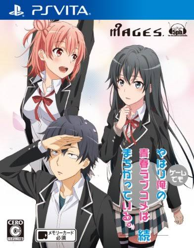

Oregairu Club de Servicio Voluntario
Página del proyecto y de su traducción al español.
NOVELA VISUAL · PC
Traducción al español de un port para PC hecho en Ren’Py a partir de la versión de PS Vita.
Traducción en desarrollo

AVANCE
Avance estimado de la traducción de textos disponibles; el juego aún no está completo.
Traducción de textos en curso. La comunidad inglesa sigue trabajando en el juego.
Las rutas están en español si sigues las decisiones correctas. Algunas elecciones fuera de esas rutas pueden mostrar texto en inglés que aún no se ha traducido; también hay malas decisiones que sí aparecen en español.
Para seguir las rutas, se prepara una guía en Word y PDF que indicará qué elegir y explicará detalles importantes. Léela cuando esté disponible.
El juego todavía no está al 100 %. La comunidad inglesa continúa trabajando en él.
ACERCA DEL PROYECTO
El proyecto traduce los textos de un port para PC hecho en Ren’Py a partir de la versión de PS Vita.
PERSONAJES
EN EL JUEGO
Escenas del port para PC con textos en español.
DESCARGAS
Descarga la versión más reciente del port para PC. Recuerda consultar la guía de rutas cuando esté disponible para seguir las decisiones correctas y mantenerte dentro del contenido traducido al español.
EL EQUIPO
Páginas que hacen posible compartir y seguir este proyecto.
INFORMACIÓN
Respuestas rápidas sobre el estado y funcionamiento del proyecto.
No. Todavía faltan rutas por completar. Se irán añadiendo conforme estén disponibles en la versión inglesa que sirve como base para este port.
El port está preparado para PC, pero también puede ejecutarse en dispositivos Android y en otros equipos que puedan ejecutar o emular juegos de PC. La compatibilidad puede variar según el dispositivo.
Las rutas que ya están terminadas se encuentran completamente en español si sigues las decisiones correctas. Algunas elecciones fuera de esas rutas todavía pueden mostrar texto en inglés.
COMPATIBILIDAD
El funcionamiento puede variar según el dispositivo y el método utilizado.
Plataforma principal del port realizado en Ren’Py.
Es posible ejecutarlo mediante herramientas compatibles. Próximamente se publicará un videotutorial.
Puede funcionar en equipos capaces de ejecutar o emular juegos de PC, aunque no todos han sido comprobados.
Proyecto fan sin fines de lucro. Los derechos del juego original de PlayStation Vita, la franquicia Oregairu, sus personajes y materiales pertenecen a sus respectivos propietarios. Este trabajo utiliza como base el port y la traducción al inglés realizados por sus respectivos colaboradores. TigerStelar Translations y Oregairu Club de Servicio Voluntario no están afiliados con los propietarios oficiales de la obra.
COMUNIDAD
Dudas y comentarios
¿Tienes alguna duda o encontraste un problema? Déjanos un comentario con los detalles.